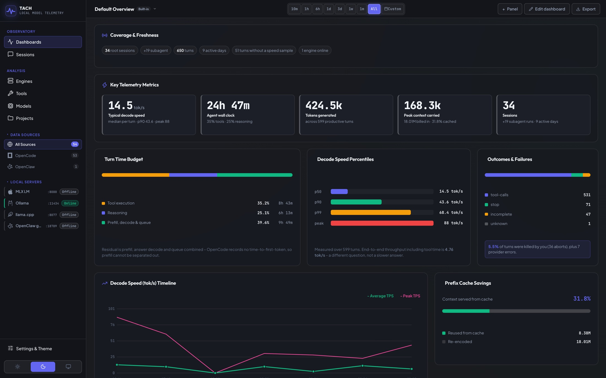
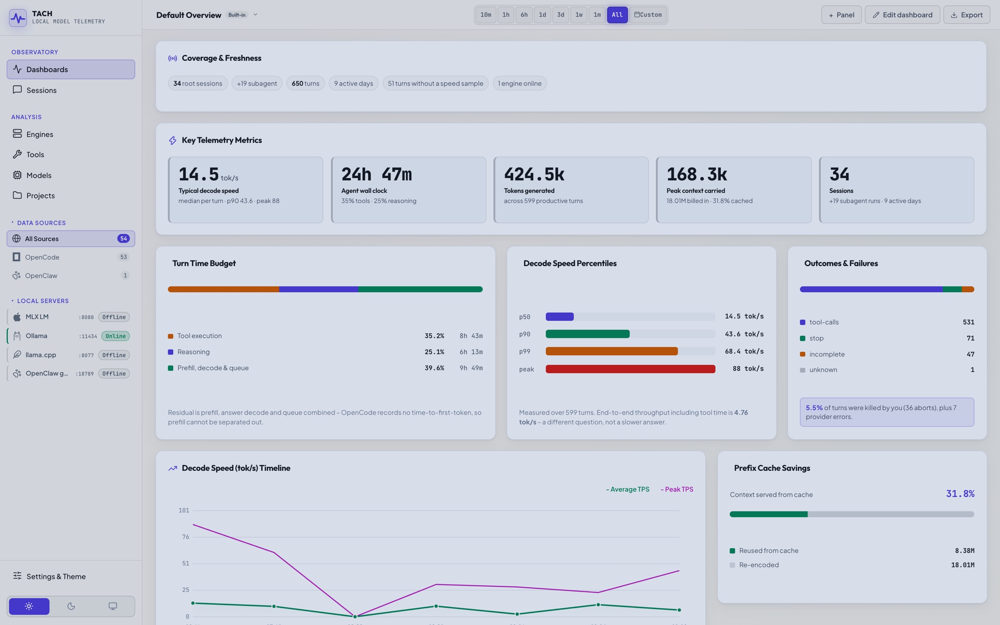
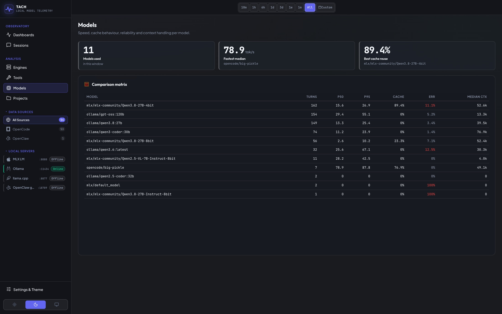
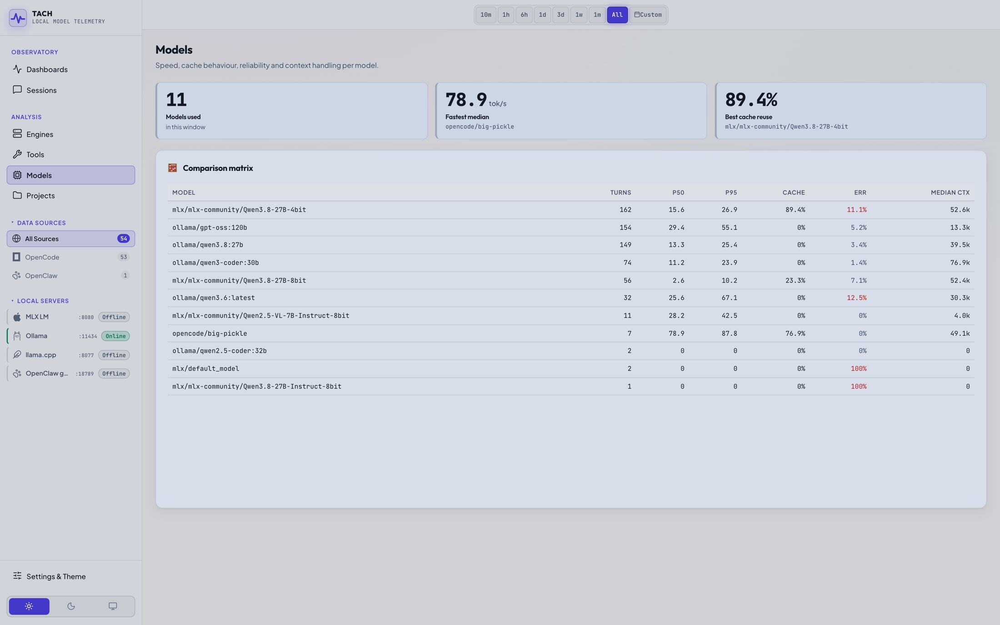
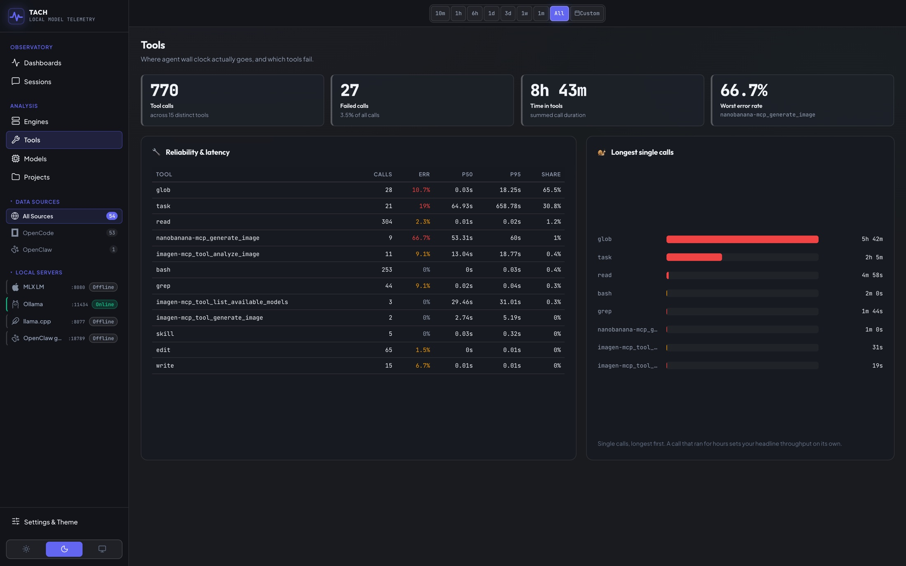
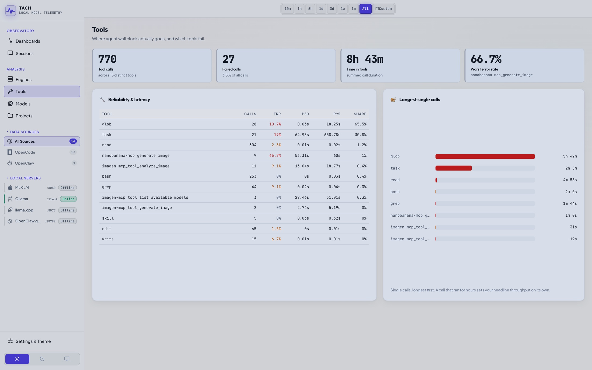
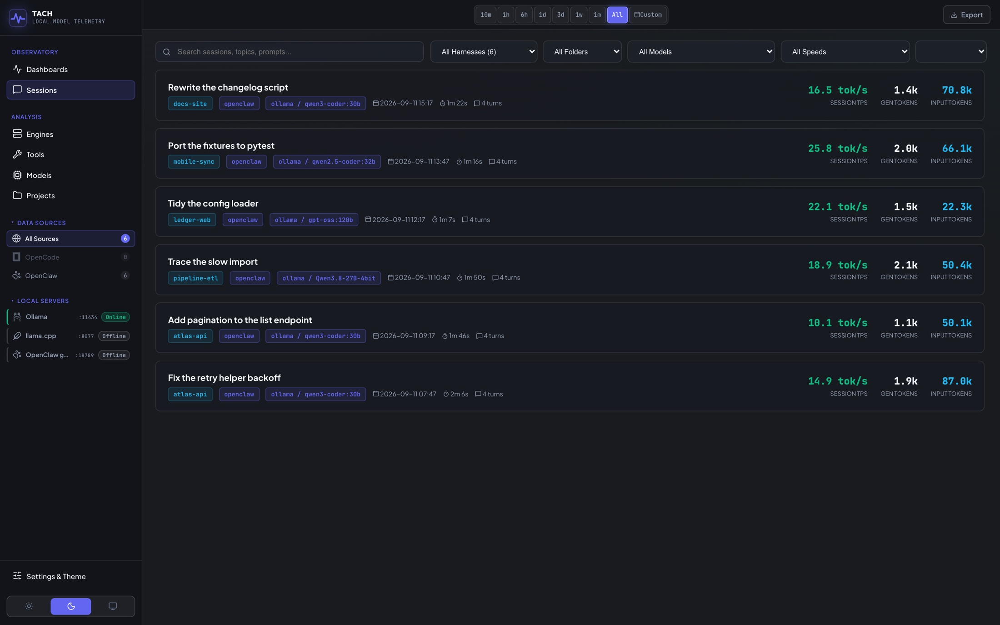
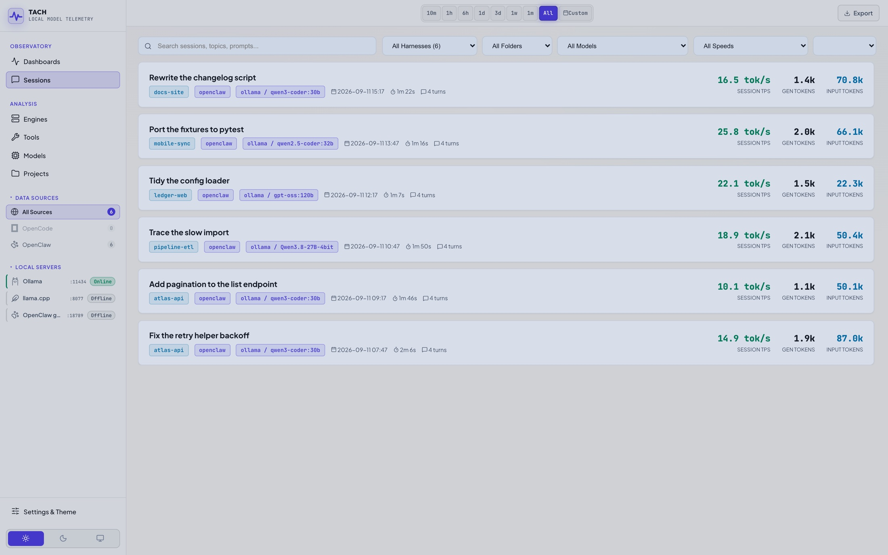
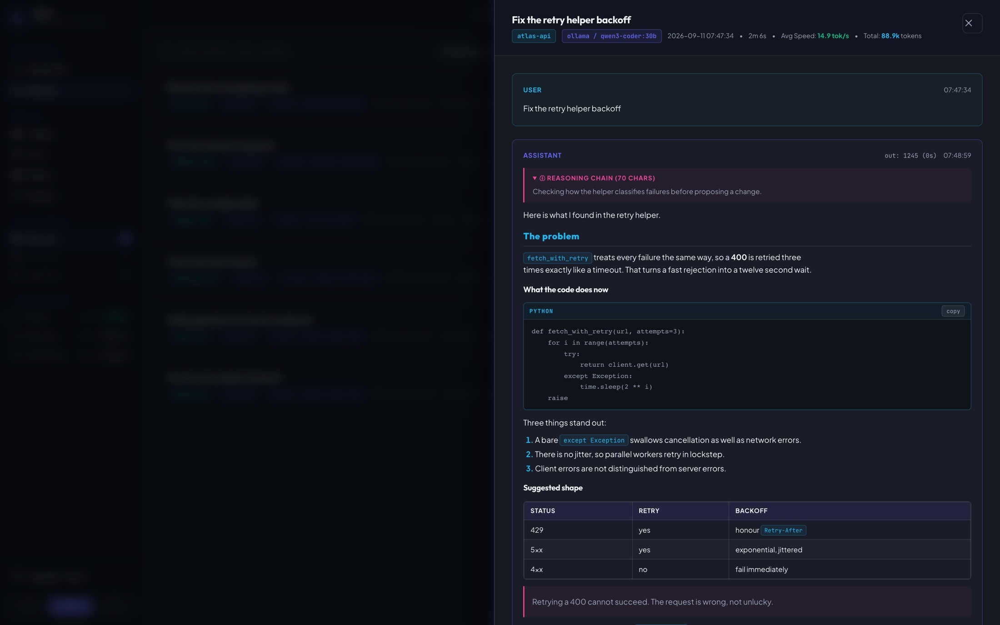
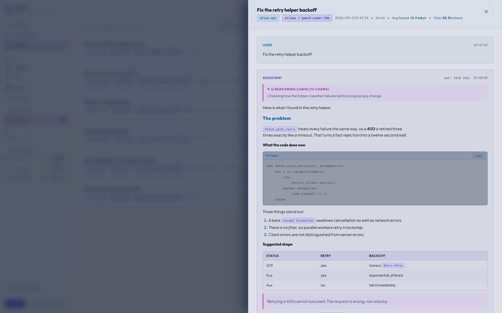

How fast is your coding agent, really?
If you run your models yourself, Tach tells you how that's actually going. It reads the history your coding agent already saves and shows you how fast it goes, which of your models is quickest, and what's slowing things down.
git clone https://github.com/thepixelabs/tach cd tach && ./run
Takes about a minute. You'll have something to look at straight away, because your agent has been keeping notes all along.
- Reads 11 agents
- OpenCode, Cline, Roo Code, Zed, Goose, OpenClaw, Aider, Continue, Jan, LM Studio, Hermes
- Watches 15 model servers
- Ollama, MLX, llama.cpp, vLLM, SGLang, KoboldCpp and nine more
- Needs from you
- No account, no config, nothing to install


Your real speed, not your best day
You remember the run where it flew. Most runs are slower than that, and the slower number is the one that decides whether a model is worth using. Tach shows all three, measured on your own work rather than a benchmark.
Which model is worth the wait
Benchmarks get run on someone else's code, on someone else's machine. This uses yours. You can see which of your models is quickest, which one fails most often, and how much speed you give up when you load the bigger one.


When it isn't the model's fault
Plenty of the time the model is fine and something else is eating the clock. Usually it's a command your agent runs: a test suite that takes four minutes, or one that fails and gets tried again. You can see exactly which ones, and how long each of them took.


Every session, kept and searchable
Your agent's whole history stays browsable: filter by project, by model, by how fast it ran. Open any one and you get the conversation back, formatted the way it was written, with the code blocks, tables and tool calls intact rather than flattened into grey text.




Works with what you already run
Nothing to connect and no key to paste. On startup Tach looks in the places these tools already keep their history, and asks whichever model servers are listening what they are serving.
Agents it reads
- OpenCode
- Cline
- Roo Code
- Zed
- Goose
- OpenClaw
- Aider
- Continue
- Jan
- LM Studio
- Hermes
Model servers it watches
- Ollama
- MLX LM
- llama.cpp
- vLLM
- LM Studio
- SGLang
- KoboldCpp
- LocalAI
- TabbyAPI
- Cortex
- Jan
- Text-gen WebUI
- Open WebUI
- Hermes
- OpenClaw
Found, not read yet
- Crush
- Open WebUI
- LibreChat
- AnythingLLM
- Msty
- Chatbox
- GPT4All
These show in the sidebar so you can see they were found. Adding a reader for one is a single Python file.
Built in the open
It reads OpenCode, OpenClaw, Aider, Continue and Hermes today. If you use something else, adding it is a contained job: one Python file that turns that tool's saved history into the shape the rest of the app already uses, tested against your own sessions.
Then open localhost:3344 in your browser. It goes looking for your agents by itself, so there's nothing to set up.
It only ever reads. Your agents carry on exactly as before.
Free and open source. MIT licensed.
The screenshots above come from a sample project.